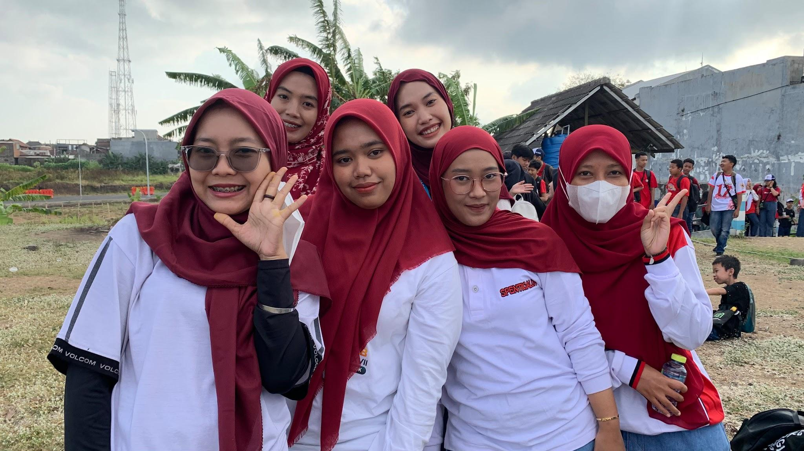
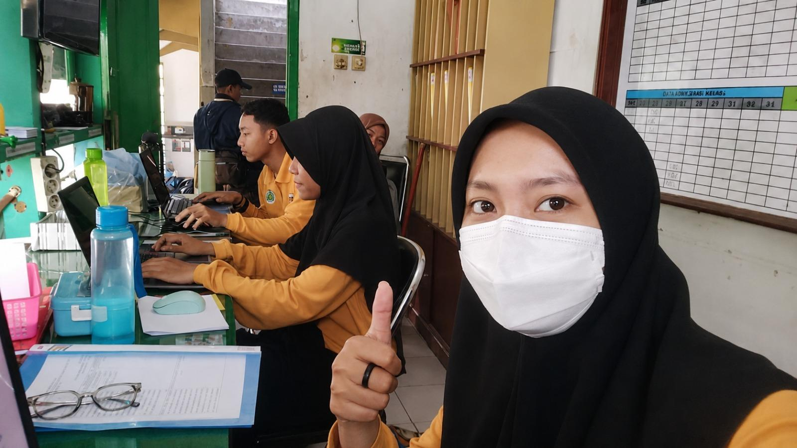

Deskripsi Kegiatan Mingguan
PPL PPG Calon Guru Pendidikan Teknik Informatika Gelombang 1 Tahun 2026
SMPN 18 Malang
Minggu 6
Nama : Siska Yulia Rahmawati
NIM: 253153743918
Hari/Tanggal |
Deskripsi Kegiatan |
Refleksi |
Senin/24 Agustus 2026 |
Jalan santai memperingati hari kemerdekaan Indonesia yang ke 81 dan diesnat SMP 18 Malang |
Jalan santai peringatan HUT RI ke-81 dan Dies Natalis SMPN 18 Malang mengajarkan saya arti kebersamaan dan semangat gotong royong. Suasana penuh kegembiraan dan kekompakan ini menumbuhkan rasa bangga sebagai bagian dari komunitas sekolah yang solid. |
Selasa/25 Agustus 2026 |
Libur Memperingati Hari Maulid Nabi Muhammad SAW |
|
Rabu/26 Agustus 2026 |
Standby di ruang piket Pulang lebih awal karena ada kegiatan Workshop PBD |
Pengalaman ini mengajarkan saya untuk fleksibel dan memanfaatkan waktu luang dengan lebih bijak. |
Malang, 26 Agustus 2026 |
|
Guru Pamong Ratna Agustyasari, S.Pd. NIP. 19890802 2019022001 |
Mahasiswa PPG Calon Guru Gelombang 1
Siska Yulia Rahmawati NIM 253153743918 |
Kepala Sekolah SMP Negeri 18 Malang
Mohammad Amrozi Hamidi, S.Pd., M.M NIP. 19681102 199203 1005 |
Lampiran
Tanggal |
Dokumentasi |
24 Agustus 2026 |
 Jalan Santai |
25 Agustus 2026 |
Libur Memperingati Hari Maulid Nabi Muhammad SAW |
26 Agustus 2026 |
 Standby di ruang piket |